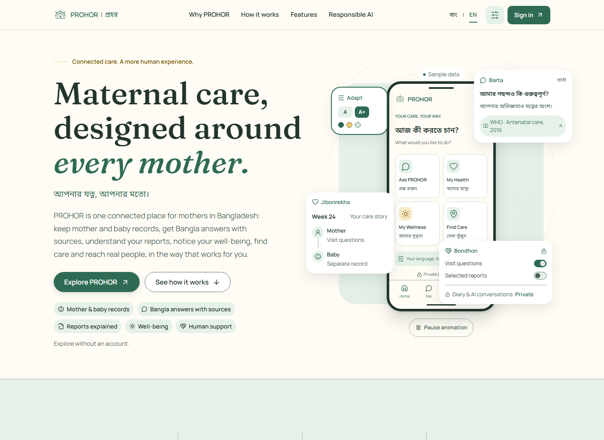
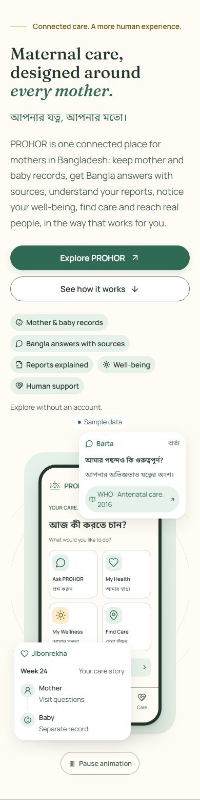
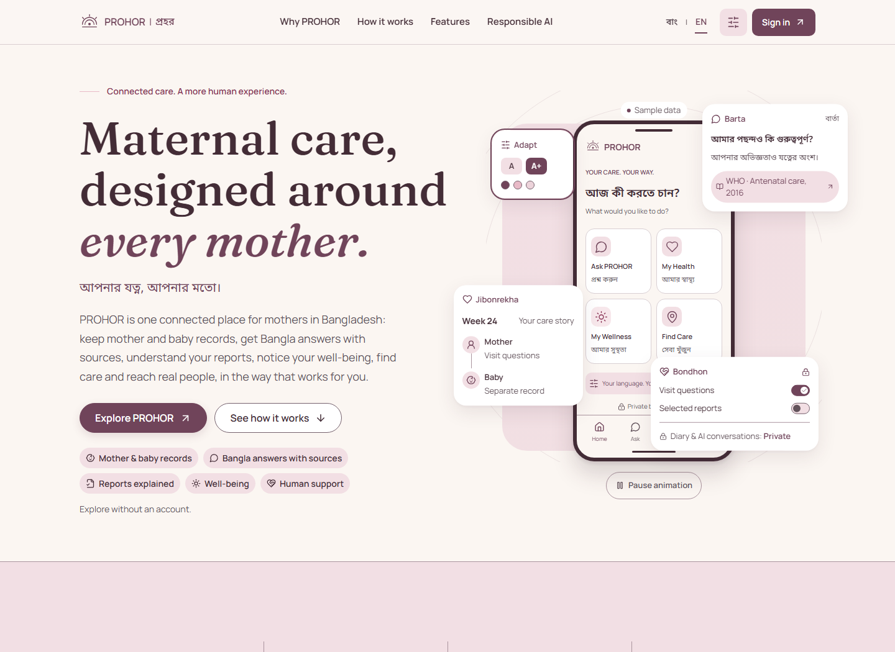
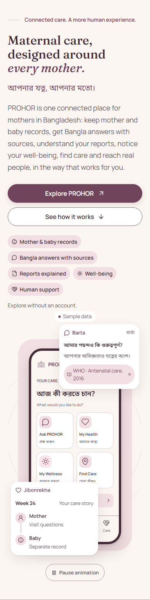
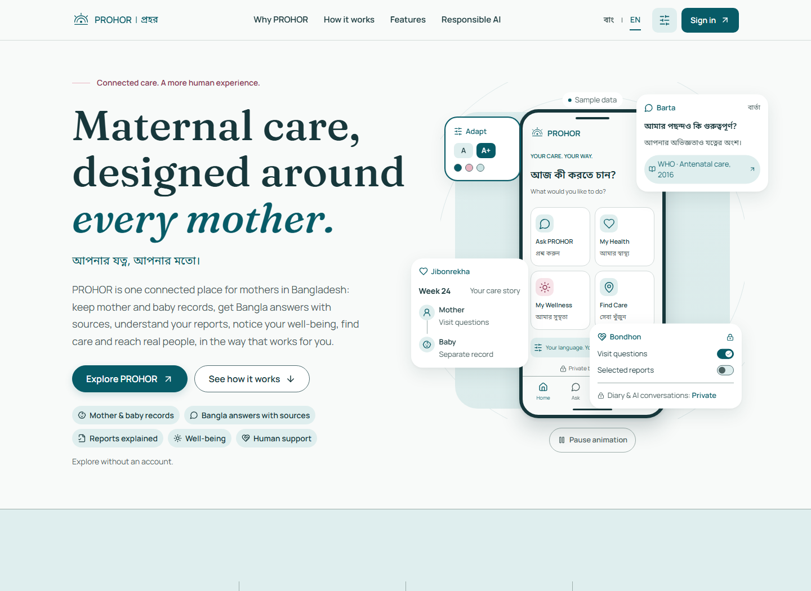
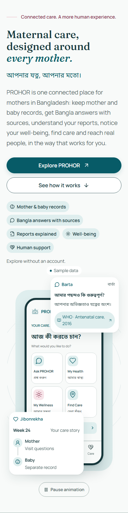
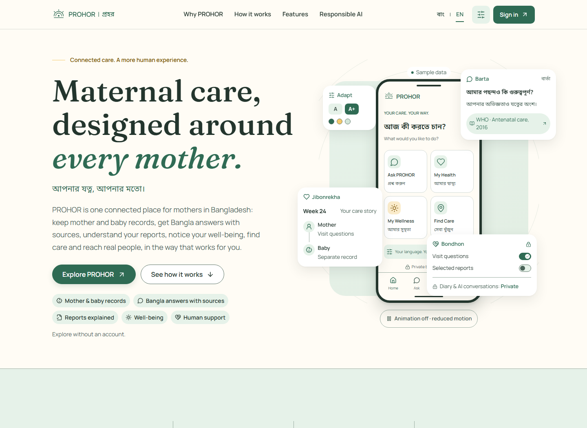
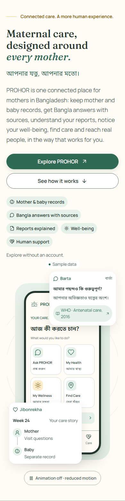

CSS animation sampled at 0s, 1s, 2.5s and 5s. Desktop: 1440px. Mobile: 390px, full hero. The phone and cards contain decorative sample content.








Test report and limitations · Layout measurements